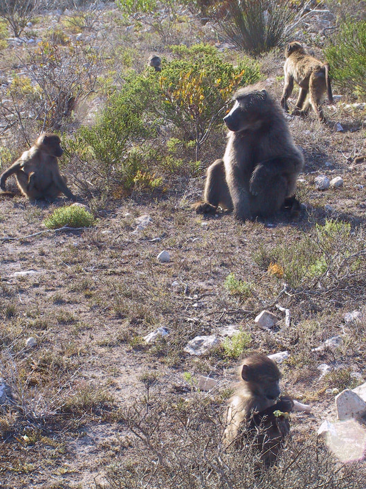

Welcome!
We develop and apply data science tools to better understand the evolution and development of social animals.

Thanks for visiting! On this site you'll find information about our lab.
We are a highly interdisciplinary lab that values the spaces between disciplines and encourages new ideas and new approaches.
We are particularly interested in developing geospatial, statistical, and machine learning tools to better understand how social animals respond to landscape and climate changes. Much of this work focuses on wildlife populations — e.g., assessing how landscape changes influence the spread of disease, and how social network structures develop and impact behaviour. To complement our work with wildlife, we also study the evolution and development of social behaviour in AI agents trained using reinforcement learning.
If you'd like to reach out, please email: tyler.bonnell@ucalgary.ca